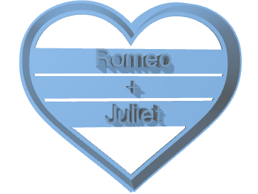
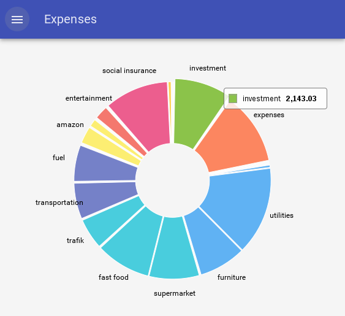
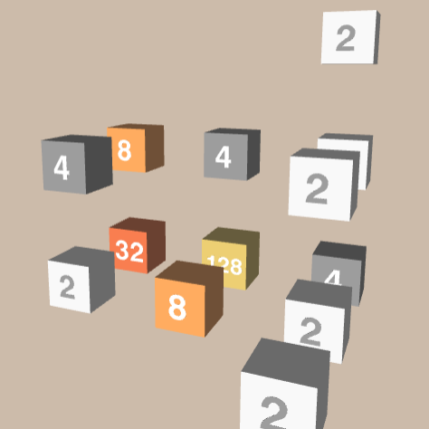
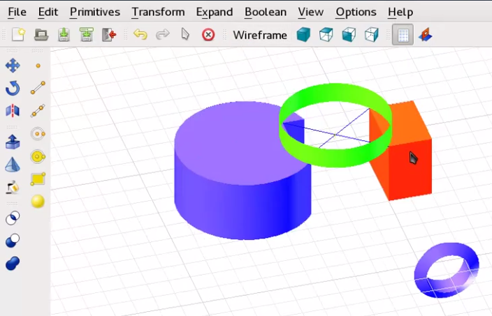
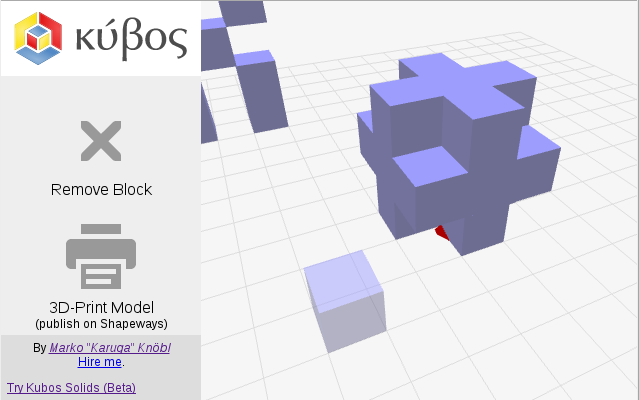
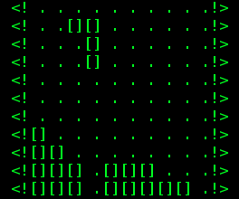

Programming
Main technologies and topics
- Python
- JavaScript
- React.js
- three.js
- NumPy, Pandas, scikit-learn, ...
- mathematical algorithms
Portfolio

Cookie Cutter Customizer
A project for the startup Cookie Cutter Kingdom: providing a web-based 3D preview for customized, 3D-printed cookie cutters. The cookie cutters can be personalized with a text or traced from a user-provided image. I also developed an SVG-based drawing tool for creating cutters from custom outlines (not included in the final product).

Kontobuch
A personal finance assistant for monitoring spending and income of Austrian bank accounts.
Automatically categorizes transactions and visualizes the user's financial data in interactive charts.


Kubos
A simple desktop CAD application written in Python intended for use in schools (discontinued).

Kubos Blocks
A web-based 3D modeling application for creating objects by assembling blocks.

Tetr
A tool for creating web-based tetris games with customizable and diverse graphics options (ranging from 1984 console graphics to 3D).